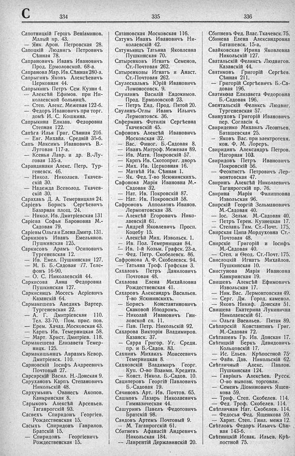

Лист источника 462
Скан

Распознанный текст
С 334
Сапотницкій Гершъ Веніаминов.
Малый пр. 43.
— Янк. Арон. Петровская 28.
Сапоцкій Людвигъ Петровичъ
Сѣнная 78.
Сапрановичъ Иванъ Ивановичъ
Прод. Ермоловской. 68-а.
Сапранова Мар. Ив. Сѣнная 280-а.
Сапрыгинъ Яковъ Алексѣевичъ
Церковная 44.
Сапрыкинъ Петръ Сем. Кузни 4.
— Алексѣй Ефимов. при Ни-
колаевской больницѣ.
— Степ. Алекс. Межевая 122-б.
— Федоръ Ивановичъ при торг.
домѣ И. С. Кошкина.
Сапрыкина Елизав. Федоровна
Степная 122.
Сапѣга Илья Григ. Сѣнная 216.
— Евг. Михайл. Средній 35-б.
Сапъ Максимъ Ивановичъ В.-
Луговая 117-а.
— Ксенья Лавр. и др. В.-Лу-
говая 135-а.
Сарандинаки Алекс. Петр. Тур-
геневск. 46.
— Никол. Николаев. Ткачев-
скій 30.
— Надежда Всеволод. Ткачев-
скій 30.
Сараханъ Д. А. Темерницкая 24.
Саріевъ Борисъ Сергѣевичъ
Базарная площ. 24.
— Никол. Ив. Дмитріевская 131
Саріева Софья Бароновна М.-
Садовая 79.
Саріевы Ольга и Елена Дмитр. 131.
Саркизовъ Иванъ Емельянов.
Пушкинская 125.
Саркисовъ Арамъ Осиповичъ
Тургеневская 12.
— Ив. Емел. Пушкинская 127.
— М. Б. Б.-Садовая 77. Теле-
фонъ 16-90.
— О. С. Николаевскій 44.
Саркисова Анна Федоровна
Пушкинская 127.
Саркисянцъ Мосесъ Асріевичъ
Казанскій 64.
Сармакешевъ Аведикъ Вартер.
Тургеневская 22.
— А. Г. Дмитріевская 110.
Тел. 33-70. Пом. прис. пов.
— Ерем. Хачад. Московская 43.
— Карпъ Ив. Темерницкая 58.
— Март. Христ. Дмитріев. 118.
Сармакешева Елизавета Темер-
ницк. 125.
Сармакишьянцъ Авраамъ Кевор.
Дмитріевск. 110.
Сарновскій Іосифъ Андреевичъ
Почтовый 27.
Сарсарскій Васил. Н.-Донская 9.
Сарухановъ Карпъ Степановичъ
Никольскій 48.
Сархумьянъ Ованесъ Акопов.
Канкринская 8.
Сарыковъ Алексѣй Арсеньев.
Таганрогскій 93.
Сасвехъ Спиридонъ Георгіев.
Рождественская 15.
Сасыхъ Спиридонъ Гаврилов.
Братскій 15.
— Спиридонъ Георгіевичъ
Рождественская 15.
335
Сатановская Московская 116.
Сатунъ Иванъ Ивановичъ Ни-
колаевскій 42.
Сатуньянцъ Татьяна Яковлевна
Пушкинская 70.
Сатыренковъ Игнать Семенов,
Ст.-Почтовая 262.
Сатыренковы Игнатъ и Анаст.
Ст.-Почтовая 262.
Саулескальнъ Юрій Ивановичъ
Ломоносовск. 9.
Саулинъ Василій Евдокимов.
Прод. Ермоловской 23.
— Петръ Евд. Прод. Пятой 20.
Саулинъ-Оглы Иванъ Ильичъ
Лермонтовск. 36.
Саферманъ Фотилія Сергѣевна
Ткачевскій 45.
Сафоновъ Алексѣй Ивановичъ
Московская 32.
— Вас. Финог. Б.-Садовая 8.
— Иванъ Митроф. Межевая 89.
— Ив. Матв. Покровскій 57.
— Карпъ Ив. Скотоприг. дворъ
— Мих. Ив. Церковная 16.
— Матвѣй Ив. Сѣнная 1.
— Як. Фед. Т-во Ясюнинскихъ.
Сафонова Марія Ивановна М.-
Садовая 32.
— Нат. Ив. Покровскій 87.
— Нат. Ив. Покровскій 58.
Сафроновъ Апполлонъ Иванов.
Лермонтовская 38.
— Алексѣй Егоровичъ Нико-
лаевскій 61.
— Андрей Яковлевичъ Просп.
Коцебу 15.
- - Алексѣй Мих. Извольск. 1.
— Ив. Пол. Темерницкая 84.
- - Ив. 1-й Козьм. Графск. 23-а.
— Фед. Петр. Скобелевск. 86.
Сафронова А. Ф. Скобелевск. 94.
— Татьяна Троф. Графская 3.
Сахаловъ Петръ Даниловичъ
Почтовая 48.
Сахалова Елена Михайловна
Рождественская 41.
Сахаровъ Александръ Васильев.
Т-во Ясюнинскихъ.
— Борисъ Константиновичъ
Скаковой Иподромъ.
— Николай Ивановичъ Гни-
ловской сп. 11.
— Пав. Петр. Никольскій 92.
Сахарова Викторія Владимиров.
Казанск. 37.
— Сарра Григор. Уг. Средн.
пр. и Б.-Садов. 83.
Сахнинъ Михаилъ Моисеевичъ
Темерницкая 8.
Сахновскій Владимиръ Георг.
Куп. О-во Взаимн. Кредита.
— Конст. Никол. Б.-Садов. 10.
Сациперовъ Георгій Павловичъ
Б.-Садовая 19.
Сачиновъ Арт. Ив. Почтов. 65.
Сашковъ Лазарь Николаевичъ
Гимназическая 44.
Сашуринъ Павелъ Федотовичъ
Братскій 98.
Саядовъ Артемъ Почтовый 9.
— М. Таганрогскій 61.
Сбитневъ Афанасій Андревичъ
Никольская 184.
-- Лаврентій Державинскій 20.
336
Сбитневъ Фед. Влас. Ткачевск. 75.
Сбинева Елена Александровна
Баташевск. 15-а.
Свайковская Ирина Яковлевна
Никольскій 127.
Сваталскій Феликсъ Людвигов.
Казанскій 44.
Сватиковъ Григорій Сергѣев.
Сѣнная 211.
— Григорій Сергѣевичъ Б.-Са-
довая 196.
Сватикова Елизавета Федоровна
Б.-Садовая 196.
Свентальскій Феликсъ Людвиг.
Тургеневская 57.
Свинуховъ Григорій Ивановичъ
пер. Согласія 4.
Свириденко Михаилъ Леонтьев.
Баташевская 25.
— Яковъ Вас. при электротехн.
кон. Ф. М. Лореръ.
Свиридинъ Александръ Петров.
Нагорная 103.
Свиридовъ Петръ Ивановичъ
Покровскій 56.
— Феоктистъ Петровичъ Лер-
монтовская 47.
Свиринъ Алексѣй Николаевичъ
Таганрогскій пр. 76.
Свирина Марія Филипповна
Извольская 96.
Свирскій Георгій Зельмановичъ
М.-Садовая 40.
— Іос. Зельм. М.-Садовая 40.
— Петръ Терен. Кузнецкая 17.
— Степанъ Тим. Ст.-Почт. 175.
Свирская Ципа Мордуховна Ст.-
Почтовая 48.
Свирскіе Григорій и Іосифъ
М.-Садовая 40.
— Степ. и Ѳеод. Ст.-Почт. 175.
Свислоцкій Игнатъ Михайлов.
Пушкинская 10.
Свистунова Марія Ивановна
Канкринская 19.
Свищевъ Алексѣй Ефимовичъ
Извольская 17.
— Ник. Вас. Лермонтовская 49.
— Серг. Дм. Город. каменол.
— Яковъ Никиф. Донская 51.
Свищева Екатерина Лукинична
Николаевскій 61.
— Ольга Васильев. Пятая 89.
Свѣпарскій Константинъ Григ.
М.-Садовая 72.
Свѣташевъ Гр. Ив. Донская 17.
Свѣтицкій Беркъ Давидовичъ
Кольцовскій 17.
— Ис. Ельев. Крѣпостной 75.
— Файв. Дав. Никольскій 62.
Свѣтличный Алекс. Павлов.
Пушкинская 124.
— Гавріилъ Алексѣев. Русск.
О-во вывозн. торговли.
— Семенъ Діоминовичъ Ящен-
кова 59.
— Триф. Степ. Скобелев. 114.
— Фед. Троф. Скобелев. 114.
Свѣтличная Нат. Скобелев. 114.
— Федосья Фед. Ященкова 59.
— Харит. Степ. Гнил. межа 12.
Свѣтловъ Федоръ Ильичъ Сѣн-
ная 143-б.
Свѣтницкій Исаак. Ильев. Крѣ-
постной 75.